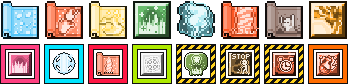

lgp
Un kit per il plugin LGP del client di uaRO: ogni skill a terra mostra la sua icona ufficiale, ingrandita da 24 a 38 pixel e colorata come la skill.
Scarica il kit
lgp_20261015.zip, 40 KB:
plugin.ini e la cartella lgp con 64 immagini

Installazione
Ci vogliono un paio di minuti. Alla fine la cartella del gioco deve essere così:
UaRO World of Your Dream
├─ plugin.ini ← quello del kit
└─ data
└─ texture
└─ lgp
├─ g_wz_stormgust.bmp
├─ g_wz_meteor.bmp
└─ … (64 immagini in tutto)
- Chiudi il gioco.
- Apri la cartella del gioco. Fai clic destro sull'icona di uaRO sul desktop e scegli Apri percorso file. Si apre la cartella
UaRO World of Your Dream: è quella dove c'è ancheplugin.ini. Tienila aperta. - Fai una copia di quello che c'è. Sul desktop crea una cartella
lgp originale(clic destro, Nuovo, Cartella). Copiaci dentro il fileplugin.inidella cartella del gioco e la cartellalgpche trovi indata, poitexture. Usa copia e incolla (Ctrl+CeCtrl+V), non trascinare: trascinando i file possono spostarsi invece di essere copiati. Se intexturela cartellalgpnon c'è, copia soloplugin.ini. - Estrai il kit. Fai clic destro sul file scaricato
lgp_20261015.zip, scegli Estrai tutto e poi Estrai. Si apre una cartella conplugin.inie la cartellalgp. - Copia
plugin.inidalla cartella estratta alla cartella del gioco. Quando Windows chiede cosa fare con il file che c'è già, scegli Sostituisci il file nella destinazione. - Copia la cartella
lgpintera dalla cartella estratta indata, poitexture, della cartella del gioco: incollala dentrotexture, non dentrolgp. Se Windows chiede, scegli Sostituisci i file nella destinazione. - Controlla. Apri
data,texture,lgp: devi vedere subito le immagini, comeg_wz_stormgust.bmp. Se invece trovi un'altra cartellalgp, aprila, seleziona tutto (Ctrl+A), taglia (Ctrl+X), torna indietro di una cartella e incolla (Ctrl+V). - Accendi le icone. Avvia il gioco, entra con un personaggio, scrivi
@lgpnella chat e premi Invio. Lo stesso comando le spegne.
Per tornare come prima
Chiudi il gioco e ricopia plugin.ini e la cartella lgp della cartella lgp originale sul desktop al loro posto, come ai passi 5 e 6, scegliendo Sostituisci.
Cosa cambia
- Le skill sono opache al 60%, per vedere cosa c'è sotto.
- Pneuma, Safety Wall, Demonstration, Fire Pillar, Spider Web, Venom Dust e le trappole sono piene, con una cornice colorata, per vederle subito.
- Le aree di Storm Gust, Meteor Storm e Lord of Vermilion restano visibili per 4,7, 1 e 4,1 secondi.
Skill del kit
- Storm Gust
- Meteor Storm
- Lord of Vermilion
- Safety Wall
- Fire Wall
- Warp Portal
- Sanctuary
- Magnus Exorcismus
- Pneuma
- Grand Cross
- Fire Pillar
- Ice Wall
- Quagmire
- Blast Mine
- Skid Trap
- Ankle Snare
- Venom Dust
- Land Mine
- Shockwave Trap
- Sandman
- Flasher
- Freezing Trap
- Claymore Trap
- Talkie Box
- Volcano
- Deluge
- Violent Gale
- Land Protector
- Lullaby
- Mr. Kim A Rich Man
- Eternal Chaos
- A Drum on the Battlefield
- The Ring of Nibelungen
- Loki's Veil
- Into the Abyss
- Invulnerable Siegfried
- Dissonance
- A Whistle
- Assassin Cross of Sunset
- A Poem of Bragi
- The Apple of Idun
- Ugly Dance
- Humming
- Please Don't Forget Me
- Fortune's Kiss
- Service for You
- Graffiti
- Demonstration
- Gospel
- Basilica
- Moonlit Water Mill
- Fog Wall
- Spider Web
- Gravitation Field
- Wand of Hermode
- Desperado
- Suiton
- Tatami Gaeshi
- Kaensin
- Ground Drift
- i richiami della famiglia
Personalizzare
L'opacità di ogni skill sta in plugin.ini, sezione [LGP::CELL_COLOR]. Nel valore 0xAARRGGBB le due cifre dopo 0x sono l'opacità: FF piena, CC 80%, B3 70%, 99 60%. Le righe sono per codice della skill: il nome sta nel commento sopra lo stesso codice in [LGP::CELL_IMAGE].